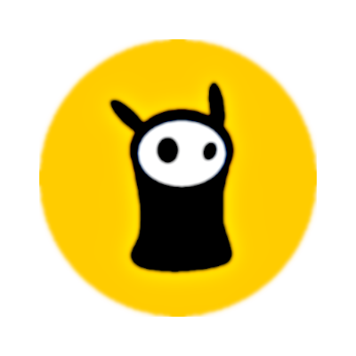

<!DOCTYPE html>
<html lang="en">
  <head>
    <title>|°|</title>
    <meta charset="UTF-8">
    <meta http-equiv="X-UA-Compatible" content="IE=edge">
    <meta name="theme-color" media="(prefers-color-scheme: dark)" content="#FFAC00">
    <meta name="viewport" content="width=device-width, height=device-height, initial-scale=1.0, minimum-scale=1.0, maximum-scale=2.0, user-scalable=no">
    <link rel="stylesheet" href="public/assets/styles/layout.css" type="text/css">
    <script type="module" src="public/scripts/portfolio.js" crossorigin="anonymous"></script>
  </head>

  <body>
    <main id="app" aria-label="en-lusis dot Git-Hub dot eye-oh." style="width: 100svw; height: 100svh;">
      <canvas id="television"></canvas>
      <div id="glass-screen"></div>
    </main>

    <footer>
      <section aria-label="Copyright Information" id="copyright-notice">
        <pre>Copyright &copy; 2024 <br /> All Rights Reserved <br /> Arjay Jones | nLucis Creative </pre>
        &nbsp;
      </section>
    </footer>
  </body>
</html>